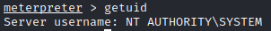
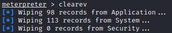

clear our trace from the machine
To clean our trace from the remote system, we can use
clearev that automatically try to clean the system logs
To do that anyway we need to have system priviledge, if we do not have them we can go to the chapter
privilege escalationTo know which user we are we can use getuid command
